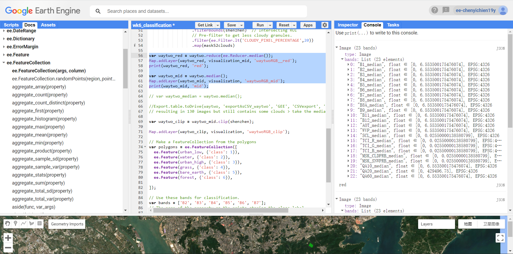
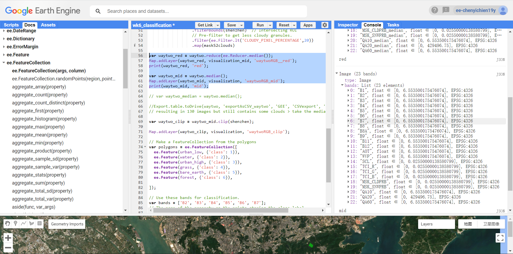
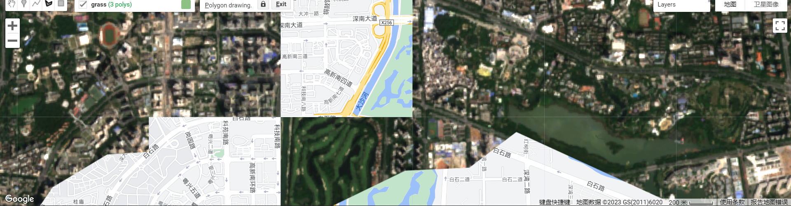
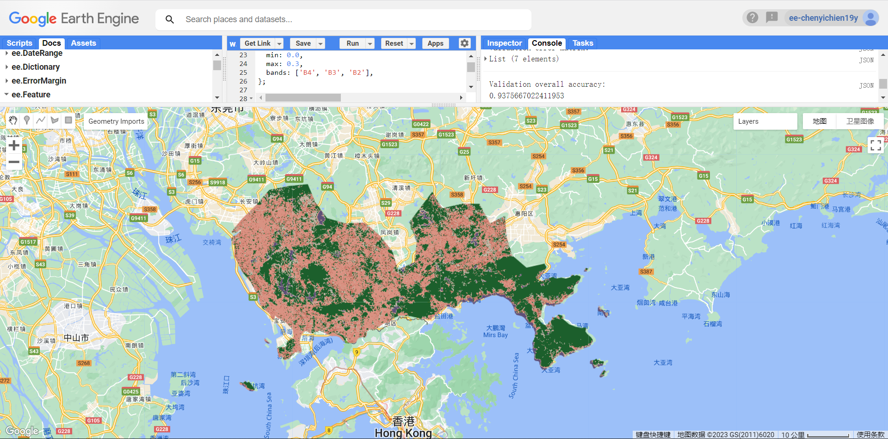

6 Classification 1
6.1 Summary
Human is good at finding patterns in imagery while computers are not. The patterns / land cover types are useful for analysis, but it is tedious to digitize hugeamount of data manually. Hence, the task is given to the computers, extracting patterns from remote sensing data. Decision trees replicate human decisions on detecting patterns and making conclusions based on given information (expert system!). Multiple methods based on decision trees are developed to classify remote sensing image!
Image classification: Segregate pixels of a remote sensing image into groups of similar spectral character / spectral categorical classification.
6.1.1 3 types of image classification
- Unsupervised image classification

Process: Clustering algorithm: K-means; ISODATA > number of clusters [Fewer clusters have more resembling pixels within groups. More clusters increase the variability within groups. (GISGeography 2014)] > manually assign land cover classes to each cluster
Not know the class (except the number of cluster) before the process.
Scale: pixel-based
- Supervised image classification

Process: Select representative training samples for each land cover class > generate a signature file, storing all training samples' spectral information > use the signature file to run a classification (through one of the classification algorithm: Maximum likelihood (normal distribution/parametric); Density slicing; Nearest neighbor; Minimum-distance; Principal components; Support vector machine (SVM); CART; RF; Iso cluster; Neural network) > pixel assignment > accuracy assessment
Pattern recognition / ML
Scale: pixel-based
CART: a tree
RF: many trees
SVM: multi-dimensional decision hyperplane boundary
- Object-based image analysis (OBIA)
 Segmentation algorithms: Multi-resolution segmentation in eCognition; The segment mean shift tool in ArcGIS > different methods to classify objects (shape; texture; spectral; geographic context; nearest neighbor)
Segmentation algorithms: Multi-resolution segmentation in eCognition; The segment mean shift tool in ArcGIS > different methods to classify objects (shape; texture; spectral; geographic context; nearest neighbor)
Scale: object-based.. (groups pixels into representative vector shapes/objects)
✔️: Esp. good for high spatial resolution image by avoiding the noisiness in the outputs of pixel-based methods, more like human in processing patterns. Because OBIA used both spectral and contextual information, it had higher accuracy compared to pixel-based methods (when comparing high and medium spatial resolution imagery) (Weih and Riggan, n.d.). > gaining popularity due to increasingly amount of high-resolution data available! More in next chapter..
6.1.2 Overfitting
have leaves with one pixel value.. Large difference between predicted values and true value (= high bias = oversimplified model); High variability of a model for a given point (= high variance = not generalize enough)
6.1.2.1 2 methods to balance bias and variance
- Limit the minimum number of pixels in leaves (usually 20 pixels) = top-down, easier to perform, but less mathematically sound.
- Weakest link pruning with tree score (find the weakest link and delete it) = bottom-up.
Tree score = SSR + tree penalty (alpha) * T(number of leaves)
For all data > Use alpha=0 for all data (=full tree = SSR) > increase alpha values > find the Alpha with lowest tree score compared to the full tree when decreasing number of leaves
Train and test split > Use the Alpha for train data > new trees > put test data in new trees > calculate SSR for test data > find the tree/alpha with the smallest SSR
Repeat 10 times the above train and test split (using different data combinations) > find the alpha with lowest SSR across 10 repetitions
Apply this final alpha to the whole data
6.1.3 Questions:
- (Practical) Whats the difference between
.reduce(ee.Reducer.median())and.median()??
Tested - mostly no difference in the outputs. but the band name becomes B1_median when using reducer.median..

output using .reduce 
output using .median
(Practical) Why the background vector map is not consistent with the remote sensing map (like the roads and buildings are not in the same position, see below snapshot)? Will this influence the data selection and accuracy (i assume other datasets may also have different consistency)?

- Is projection the problem?
- (Practical)How to select high and low urban samples for training for supervised classification? (High and low as of albedo or as of density? Based on Andy’s practical workbook, it is albedo but i am confused with the purpose of classification by albedo.)
- A:
- (Practical) Error occur when trying to print the training data after selecting different land cover as feature collection:
FeatureCollection: Collection query aborted after accumulating over 5000 elements.
- Answer from web: when printing the training data, use
.limit(5000)to allow printing subset of large data. (not sure if it is the right way to do, but this is the checking process afterall) (and not sure why the data is so large..)
6.2 Application
Classification of EO imagery allows extracting (and predicting) patterns/land cover from the data. This supports analysis on LULC, urban expansion, urban green space, illegal logging, forest fire, etc.
6.2.1 LULC
As done in the practical, the remote sensing data can be classified by land cover type.
